실행자 자동 선택
- 작업 난이도 5단계, 벤치 점수, 5시간·주간 남은 한도로 1·2순위 실행자를 추천합니다.
- 남은 한도가 기준보다 적으면 다음 단계를 멈추고 그 AI를 후보에서 뺍니다.
- 위임도 같은 기준으로 맡을 AI를 고릅니다. 다른 회사의 AI도 후보입니다.
- Claude 한도가 끝나면 API 크레딧으로 전환할 수 있습니다(선택).
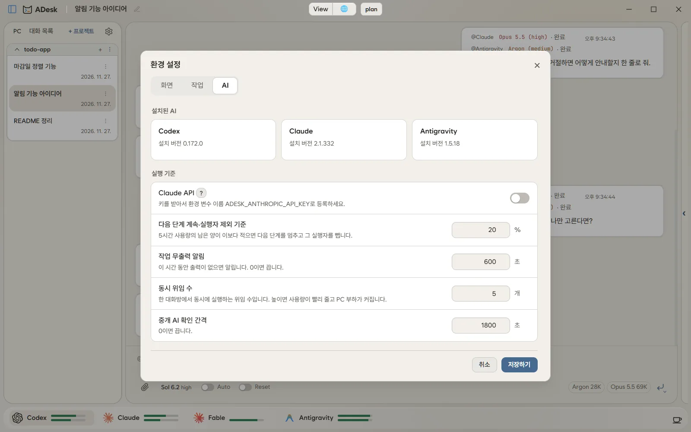
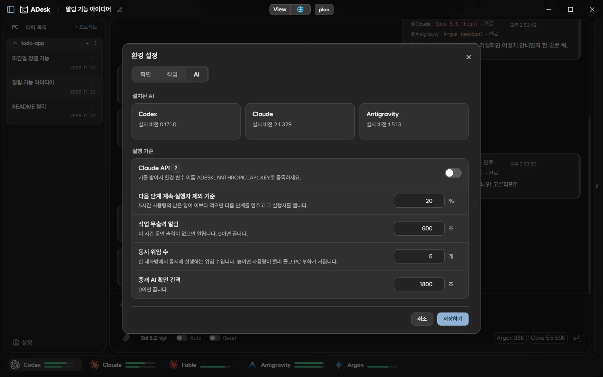
Windows용 멀티 AI 작업 데스크
Codex·Claude·Antigravity 구독을 한 창에 연결합니다. 고칠 범위를 승인하고 실행 상태를 살핍니다. 검증 기록과 결과를 확인한 뒤 수락하면 단계별로 Git에 남깁니다.
구독 하나만 있어도 계획 승인, 실행 감독, 맥락 관리, 결과 열람을 쓸 수 있습니다. 구독을 더하면 맡길 AI 후보가 늘어납니다.
최근 업데이트: 2026.11.28 · 0.7.0 — 카드·모델별 대화 세션, 중계 AI 바꾸기, Windows 설치된 앱 등록과 제거, 화면 멈춤 감소 전체 내역 보기
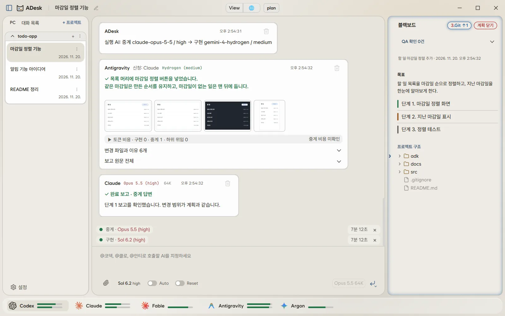
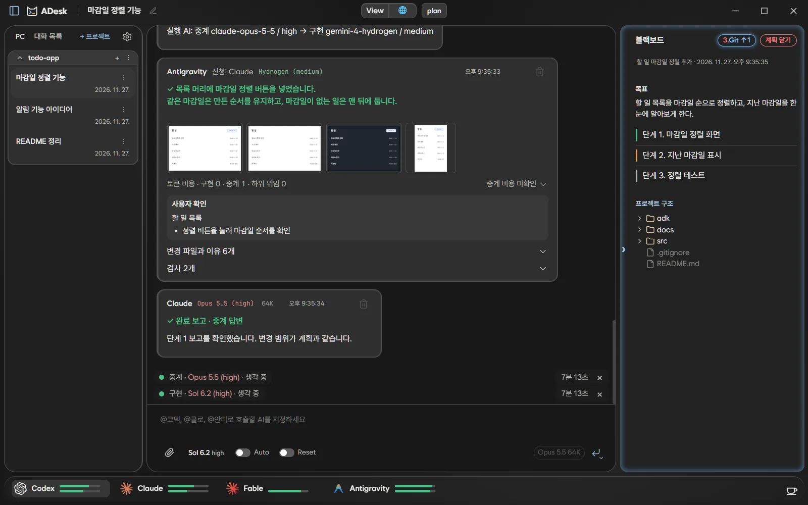
무엇이 다른가
| 터미널에서 따로 쓸 때 | ADesk |
|---|---|
| 창을 오가며 맥락을 복사한다 | 한 대화에서 @멘션으로 부른다 |
| 한쪽 구독이 먼저 바닥난다 | 남은 한도를 보고 실행자를 고른다 |
| 시키지 않은 파일까지 고친다 | 고칠 파일과 단계를 먼저 승인한다 |
| 대화가 길어질수록 비용이 쌓인다 | 맥락을 보여 주고 클릭이나 자동으로 세션을 비운다 |
작업 흐름
한 대화방 안에서 질문, 계획 승인, 실행, 결과 확인이 이어집니다.
한 AI를 부르거나 @코덱스·@클로드·@안티로 여러 AI를 함께 부릅니다. 함께 부르면 AI마다 따로 답합니다.
의견을 모아야 할 때는 토의를 씁니다. 토의는 입안·감리·조율·종합 4단계로 진행합니다.
받는 AI를 지정하지 않거나 여러 AI를 동시에 부를 때 메시지 앞에 아래 호출어를 쓰세요. 모델은 사용량 카드나 설정에서 바꿀 수 있습니다.
| AI | 대표 한글 호출어 | 영문 호출어 |
|---|---|---|
| Codex | @코덱스, @코덱, @지피티 | @Codex, @gpt |
| Claude | @클로드, @클로 | @Claude, @clo |
| Antigravity | @안티, @안티그래비티 | @Antigravity, @agy |
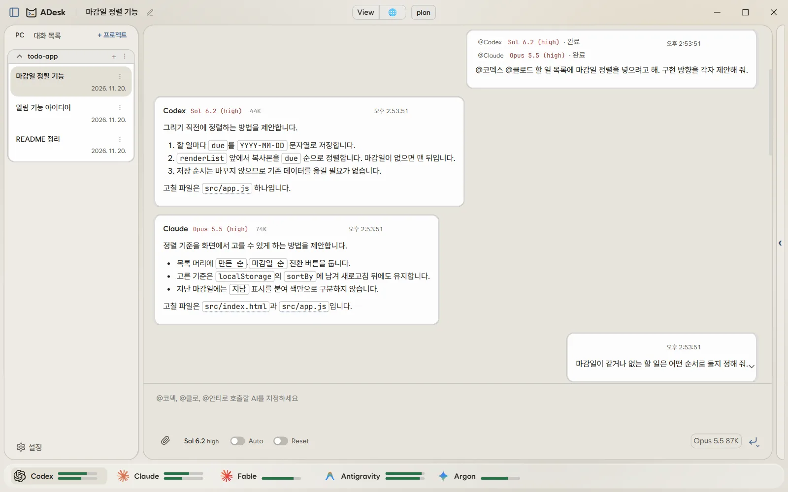
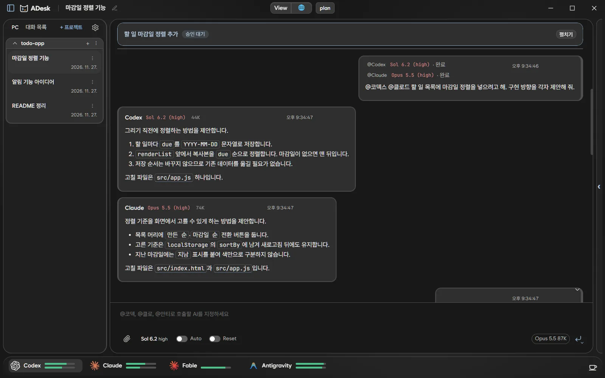
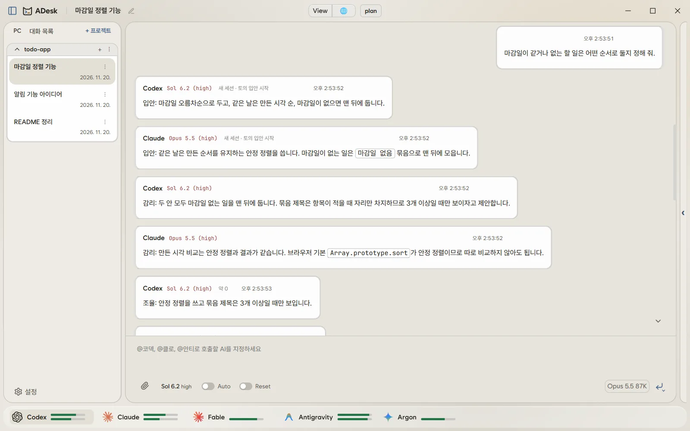
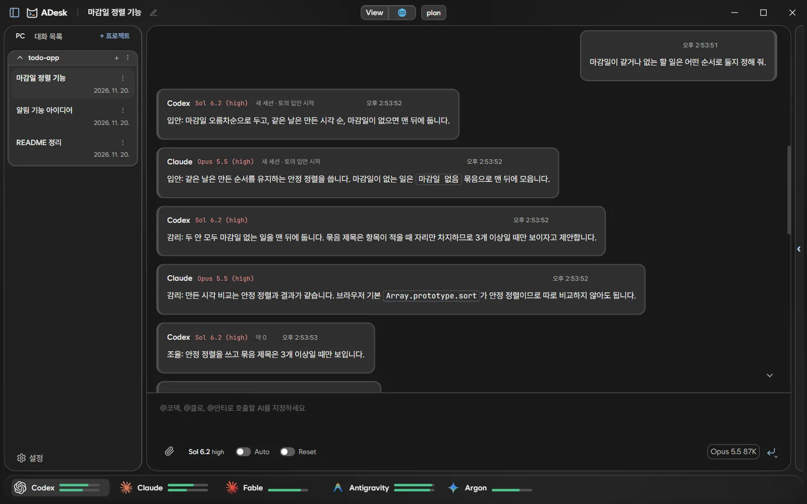
AI가 계획을 신청하면 대화 위 할 일 칸에 승인 대기 신청 카드가 뜹니다. 카드에서 대상 단계와 고칠 파일을 보고 1순위·2순위·자율·직접 지정·취소 중 하나를 고릅니다.
할 일 칸에는 승인 대기 신청, 질문 답변 안내, 테스트 수정 판정, 결과 수락과 다시 하기, 다음 단계 선택이 모입니다.
바꿀 점은 추가 지시사항 칸에 적습니다. 계획서 전체는 위쪽 plan 뷰어에서 읽습니다.
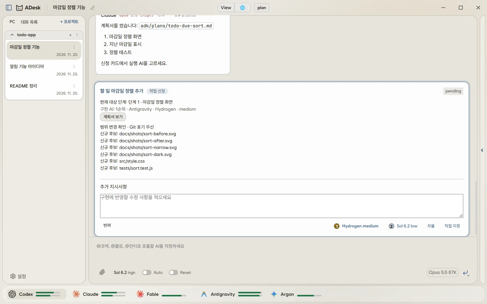
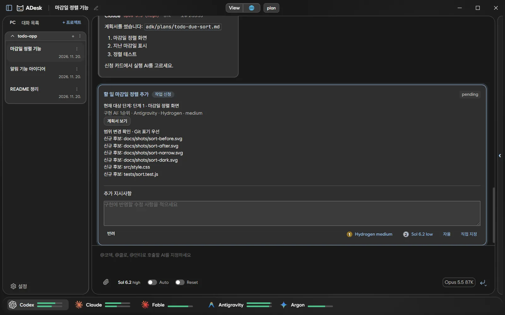
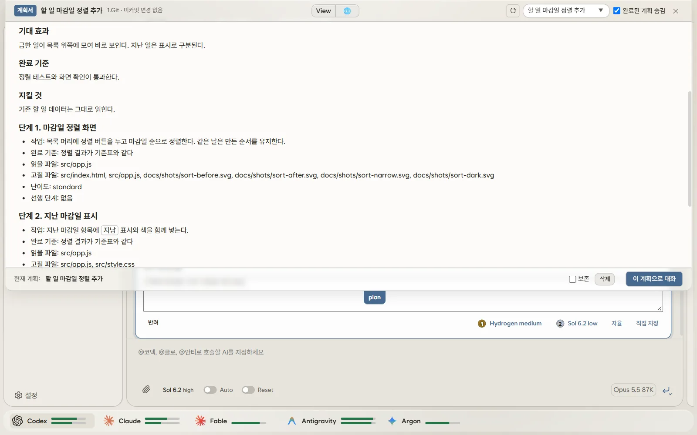
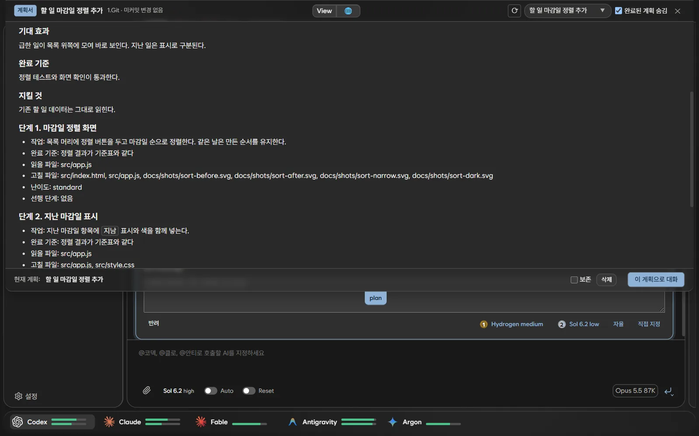
실행 중에는 입력창 위 상태 줄이 호출마다 역할을 보여 줍니다. 역할은 대화·중계·구현·판정·위임입니다. 줄마다 따로 멈출 수 있습니다.
실행 중에도 지시를 더할 수 있습니다. Auto를 켜면 단계가 끝난 뒤 다음 단계로 이어집니다. 오른쪽 블랙보드에는 목표와 단계별 진행이 보입니다.
맨 위 화면에서 중계와 구현 두 줄의 상태 줄을 볼 수 있습니다.
단계가 끝나면 보고 카드에서 결과 요약, 변경 파일과 이유, 이미지 썸네일을 봅니다. 사용자 확인 상자에는 사람이 직접 볼 화면과 사용하면서 확인할 항목이 나옵니다.
결과 화면은 대화 위쪽 View에서 바로 엽니다. 수락하면 단계별로 커밋합니다.
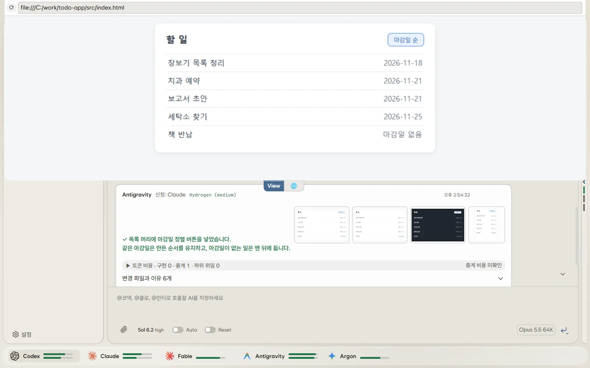
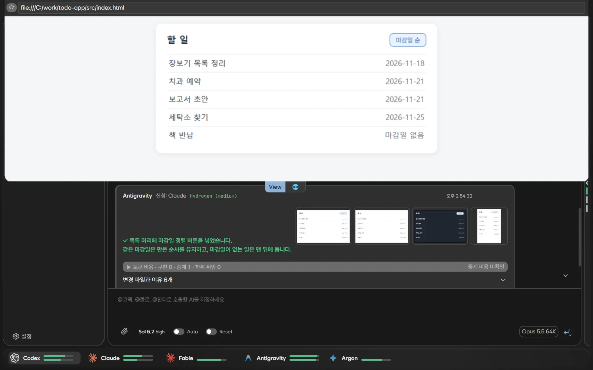
2026년 10월 11일부터 11월 14일까지 개발자 한 명이 PC 세 대에서 수행한 작업 328개를 분석했습니다. 아래 표는 그중 두 중개 방식의 작업당 추정 비용 중앙값입니다. 2026년 11월 10일 기준 제품 단가표로 환산했습니다. 실제 구독 청구액과는 별개의 수치입니다.
| 중개 방식 | 작업 수 | 작업당 중앙값 |
|---|---|---|
| ADesk 중개 | 104개 | US$1.55 |
| 외부 중개 | 38개 | US$8.71 |
ADesk 중개에서는 앱이 실행 AI 호출과 보고 중계를 맡았습니다. 외부 중개에서는 ADesk 밖에서 같은 계획서·맵·위임 스크립트를 썼습니다. 계획 AI 세션이 실행 AI에게 일을 넘기고 보고를 받아 다음 지시를 썼습니다.
두 중앙값의 비율은 외부 중개가 5.62배였습니다. 5,000회 재표본으로 계산한 95% 부트스트랩 구간은 2.95~10.11배였습니다. 11월 작업만 비교하면 3.48배였습니다. 구간은 1.73~11.43배였고 표본은 ADesk 중개 96개와 외부 중개 23개였습니다.
세션을 따로 관리하지 않고 작업 난이도에 맞춰 비용이 낮은 실행 모델로 바꾸지 않는 사용자라면, 차이가 이보다 훨씬 클 것으로 추정합니다.
이 분석은 개발자 한 명의 운영 기록에 근거합니다. 두 방식에서 같은 과제를 실행하지 않았습니다.
기능
맡길 AI 고르기, 맥락 관리, 계획, 감시, 결과 확인까지 묶음별로 정리했습니다.


Reset을 켜면 자동으로 새 세션을 엽니다. Auto를 켜면 다음 단계로 자동 진행합니다.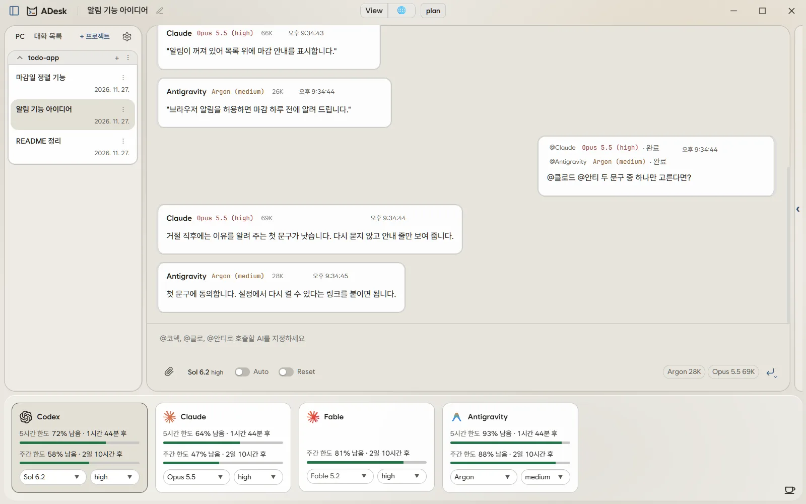
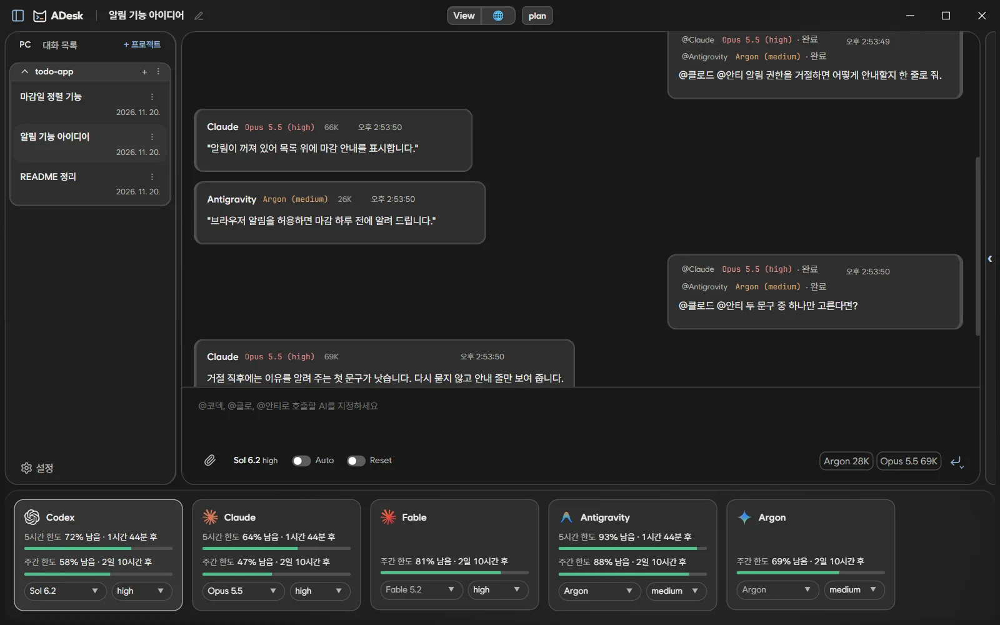
plan 뷰어에서 목록·원문을 보고 완료 숨김·보존·삭제를 합니다.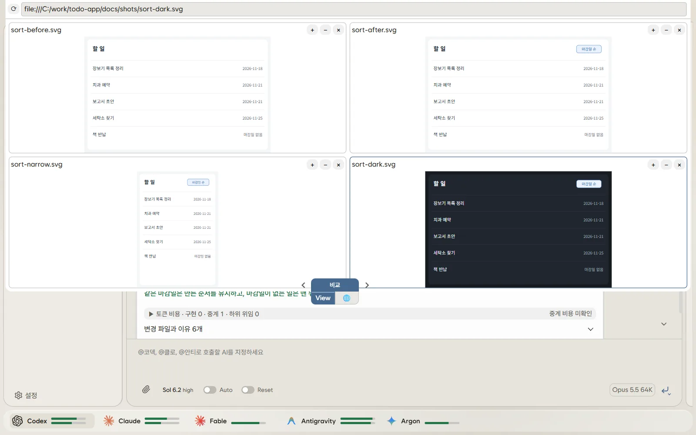
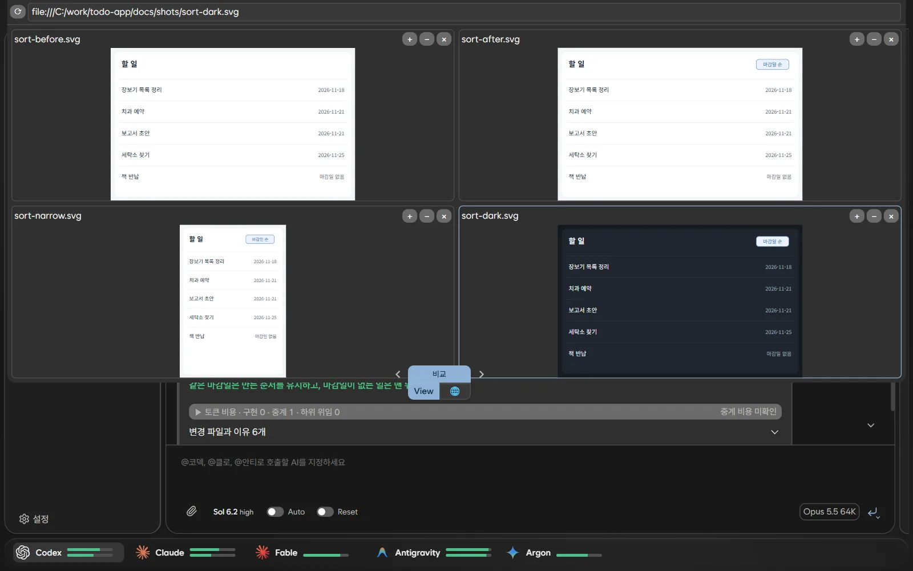
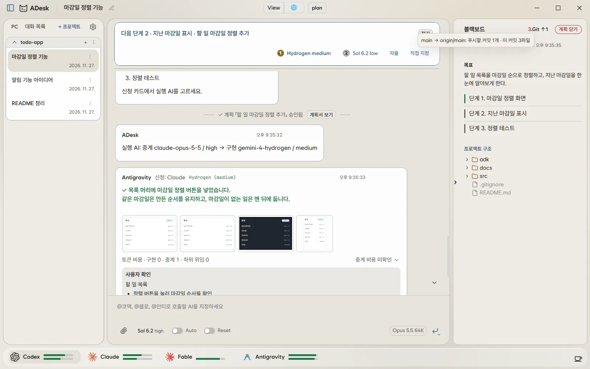
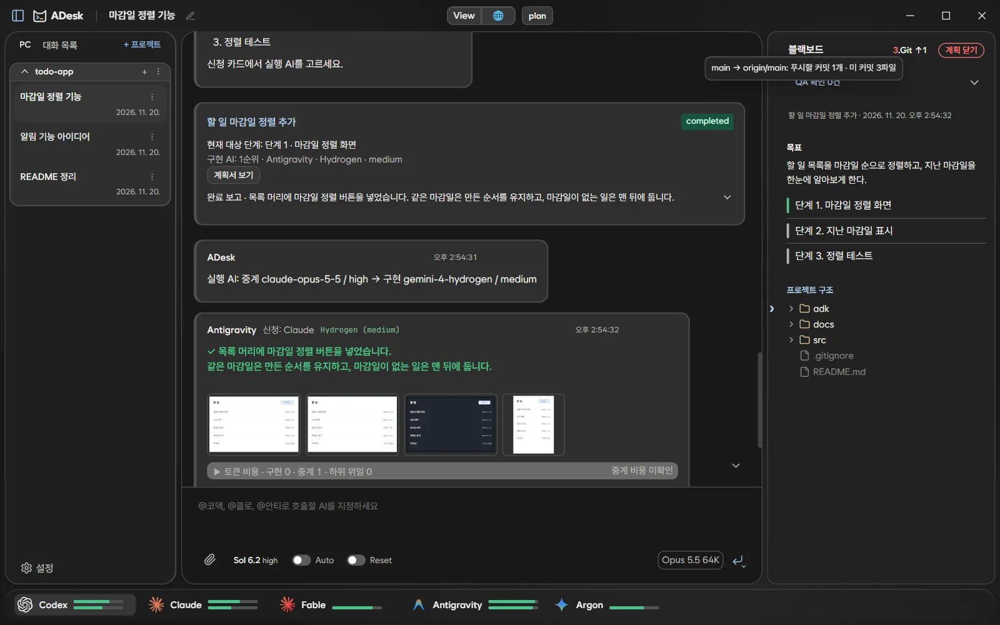
| 묶음 | 기능 |
|---|---|
| 대화 | 한글·영문 @멘션으로 받는 AI 지정 |
| 여러 AI 동시 질문(AI마다 따로 답함) | |
| 입안·감리·조율·종합 4단계 토의 | |
| 답변의 모델 이름과 맥락 크기 표시 | |
| 실행자 자동 선택 | 난이도 5단계와 벤치 점수로 1·2순위 추천 |
| 5시간·주간 남은 한도 반영 | |
| 남은 한도가 기준보다 적으면 다음 단계를 멈추고 그 AI를 후보에서 뺌 | |
| 위임도 같은 기준으로 맡을 AI 선택(다른 회사 AI 포함) | |
| Claude 한도가 끝나면 API 크레딧으로 전환(선택) | |
| 세션·맥락 | AI별 맥락 칩과 경고 기준 |
| 칩을 눌러 그 AI 세션만 비움 | |
Reset으로 자동 새 세션 | |
Auto로 다음 단계 자동 진행 | |
| 사용량 띠로 받는 AI 전환, 모델·사고 수준 선택 | |
| 기억과 지침 | 지정한 폴더의 메모리를 AI가 읽고 기록 |
| 모든 호출에 같은 작업 지침 붙이기 | |
| 계획 | plan 뷰어: 목록·원문·완료 숨김·보존·삭제 |
| 신청 카드: 대상 단계·고칠 파일·추가 지시사항·실행 방식 선택 | |
| 결정 선택 | |
| 진행 보드(블랙보드)와 접기 | |
| 할 일 칸에 계획 승인·질문 답변 안내·테스트 수정 판정·결과 수락과 다시 하기·다음 단계 선택 표시 | |
| 보고 카드의 사용자 확인 상자에 화면과 동작 확인 항목 표시 | |
| 프로젝트 맵: 파일별 역할을 적어 두고 단계 실행 때 필요한 행만 넘김 | |
| 장시간 작업 감시 | 무출력 알림 |
| 감독 AI의 주기 확인 | |
| 실행 중 지시와 호출별 중단 | |
| 백그라운드 명령이 끝날 때까지 대기 | |
| View 뷰어 | 웹·localhost, HTML, PDF |
| 이미지 8종, 영상 2종, 음성 3종 | |
| Word·PowerPoint·Excel·CSV 미리보기 | |
| 2분할·4분할 비교 | |
| 답변 썸네일, 파일 변경 자동 갱신 | |
| 우측 웹 패널 | |
| Git | 프로젝트 메뉴에서 Git 초기화 |
| Git 버튼에 미커밋 수 표시 | |
| 풀·푸시 | |
| 단계별 자동 커밋, Git 없는 프로젝트도 동작 | |
| 안전 | 프로젝트당 구현 1개 |
| 테스트 변경 판정 | |
| 중단 시 하위 프로세스까지 종료 | |
| 편의 | 체크 인용(다른 대화방 포함) |
| 대화 보관, 새 메시지 알림 | |
| PC 전역 대화 | |
| 테마·글자 크기·유리 효과 | |
| 화면 언어 선택(한국어·English) | |
| 고양이 | |
| CLI 설치·로그인·버전 확인, 앱 안 업데이트 |
대상
View에서 웹 화면·이미지·문서를 확인합니다.설치
시작 전 준비: Codex·Claude·Antigravity 중 최소 1개의 AI 계정이 있으면 바로 사용할 수 있습니다. 설치 뒤 앱 설정에서 각 CLI 설치와 로그인을 진행하세요.
ADesk는 켜질 때 새 버전이 있는지 확인합니다. 새 버전이 있으면 입력창 아래 줄에 업데이트와 나중에 버튼이 나옵니다. 따로 내려받거나 이 페이지를 열 필요는 없습니다.
업데이트를 누르면 새 버전을 내려받고 파일을 확인합니다.나중에를 누르면 다음에 켤 때 다시 알려 줍니다. 새 버전을 확인하지 못해도 앱은 평소처럼 쓸 수 있습니다. 설정·기록이 든 records 폴더는 업데이트해도 그대로 남습니다.
문제 해결
다시 설치하거나 앱이 열리지 않을 때 필요한 안내입니다. 제목을 누르면 펼쳐집니다.
설치 위치는 %LOCALAPPDATA%\Programs\ADesk\adesk로 정해져 있고 고를 수 없습니다. 설정·프로젝트 목록·기록은 그 안의 records 폴더에 있고, 각 프로젝트의 대화는 그 프로젝트 폴더의 adk\chat에 있습니다. 설치 파일을 다시 실행해도 records 폴더는 그대로 남습니다. ADesk가 켜져 있으면 "ADesk가 실행 중입니다. 앱을 닫고 다시 실행하세요."라고 알리고 설치하지 않으니 앱을 닫은 뒤 다시 실행하세요.
이미 같은 버전이 설치되어 있으면 설치 파일은 설치를 건너뜁니다. 파일이 손상된 것 같아 완전히 다시 설치하려면 아래 순서를 따르세요.
%LOCALAPPDATA%\Programs\ADesk\adesk\records 폴더를 다른 위치에 복사해 두세요.%LOCALAPPDATA%\Programs\ADesk\adesk 폴더 안에서 records 폴더만 남기고 나머지 파일과 폴더를 지우세요. records 폴더는 지우지 마세요.records 폴더만 남은 곳에는 기존 records를 그대로 둔 채 설치됩니다. records 외에 다른 파일이 남아 있으면 설치 파일이 기존 자료를 보존하려고 멈춥니다.다른 위치에 두고 싶으면 설치가 끝난 뒤 ADesk를 닫고 adesk 폴더를 원하는 곳으로 옮기세요. 옮긴 폴더 안에서 ADesk.exe --create-shortcuts를 실행하면 바탕화면과 시작 메뉴 바로가기가 새 위치로 다시 만들어집니다. 앱과 앱 안 업데이트는 폴더를 옮겨도 동작합니다.
ADesk 화면은 Microsoft Edge WebView2 런타임이 있어야 뜹니다. 이 PC에 없으면 설치 파일이 Microsoft 설치 도우미로 자동 설치하므로 따로 할 일은 없습니다. 자동 설치가 실패하면 https://developer.microsoft.com/microsoft-edge/webview2/ 페이지에서 Evergreen 설치 프로그램을 받아 설치한 뒤 ADesk-Setup.exe를 다시 실행하세요.
설치가 실패하면 메시지 창의 안내를 확인하고 인터넷 연결을 점검한 뒤 ADesk-Setup.exe를 다시 실행하세요. 이미 설치된 records 폴더는 건드리지 않습니다.
업데이트 중 교체가 실패하면 이전 버전으로 되돌린 뒤 앱을 다시 켜고 실패했다는 것을 알려 줍니다. 내려받은 파일이 올라온 파일과 다르면 업데이트를 멈추고 앱을 계속 쓰게 하며, 다음에 켤 때 다시 권합니다.
%LOCALAPPDATA%\Programs\ADesk\adesk\records 폴더의 startup.log(시작 단계 기록)와 startup_error.log(시작 오류 기록)를 확인하세요. 문의할 때 이 두 파일과 메시지 화면을 함께 보내 주세요.
후원해 주신 마음은 앱 발전을 위해 쓰입니다.